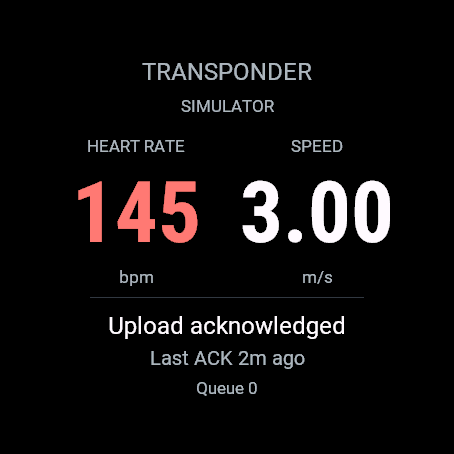
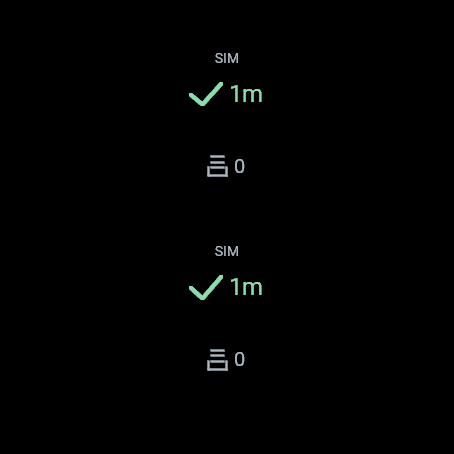
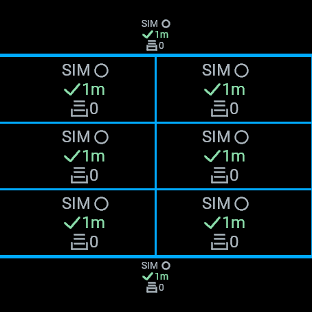
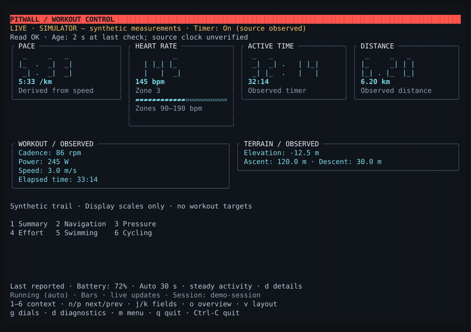

Bring your phone.
The planned watch-to-server path requires a paired phone with internet access. Phone-free use is not supported.
Garmin workouts & races / prototype
Pitwall is being built to show heart rate and speed while you work out or race with a Garmin. A data field sends readings through your paired phone to your self-hosted server; the CLI and TUI display the latest received sample.
The planned watch-to-server path requires a paired phone with internet access. Phone-free use is not supported.
Watch upload intervals, phone and network delays, and client polling affect what you see. Near-live is the goal; update latency is not guaranteed.
Physical watch and iPhone delivery are unverified. Phone-reachable HTTPS ingestion is not implemented yet.
Watch → phone → server → terminal
A Garmin Connect IQ data field that reads heart rate and speed during native activity recording and queues them for upload through the phone. Use one large field for the measurements; smaller slots show upload and acknowledgment status only.
Connect IQ / Monkey CA Linux-first service that receives authenticated batches and commits them to SQLite before acknowledgment.
SwiftNIO / SQLiteAn agent-friendly CLI and a Chio terminal interface. Read stored snapshots locally or run the client over SSH.
Scriptable CLI / Chio TUI01 / On the watch
Transponder rendered in Garmin’s Forerunner 970 simulator. One large field shows heart rate and speed; smaller slots show upload and acknowledgment status only.

Red heart: heart rate. Blue dial: speed. Upload status sits below.

Upload symbols, acknowledgment age and queued samples.

The same status symbols in smaller slots. No measurement values.
Actual simulator captures · synthetic telemetry · Garmin SDK 9.2 · October 6, 2026. Captured directly during the production verification run, with a final sample of 145 bpm / 3.0 m/s. Phone delivery and physical-watch behavior remain unverified.
The simulator repeats Transponder in each native field slot; cyan lines mark its layout dividers. A green check and age describe an earlier accepted upload, not current connectivity. Ages differ because the screens were saved in sequence. Select a capture to view it at full size.
02 / The view from the wall
This is the running Chio TUI, captured from the project itself using synthetic workout telemetry.

ON THIS PAGEA static recording, with no live terminal, watch, or server connection. On a narrow screen, scroll the capture sideways to read it.
IN THE CLIENTPeriodic snapshot refresh today. Server-pushed updates and reconnect / resync are planned.
Reading the measurements
Absent measurements stay absent. Failed reads stay visible. A connected client alone doesn’t establish a fresh measurement or a finished workout.
03 / Current capabilities and limits
The Garmin simulator can send synthetic heart rate and speed through Pitwall to the CLI and TUI. Physical workouts and races have not been validated.
Development status / October 2026The real Transponder data field in the Garmin Forerunner 970 simulator sends synthetic telemetry to the local daemon, SQLite, and CLI / TUI. Stored snapshots survive daemon restart; retry checks cover duplicate delivery.
A repeatable synthetic workout and outage/recovery test harness is implemented; its full Garmin simulator run is awaiting verification. After that, add server-pushed updates and reconnect / resync. Current CLI and TUI clients refresh stored snapshots periodically.
Physical testing is deferred. Later, validate a Forerunner 970 and iPhone bridge, including locked-phone delivery, interruptions, native recording and battery impact. Phone-reachable HTTPS is not yet implemented or verified.